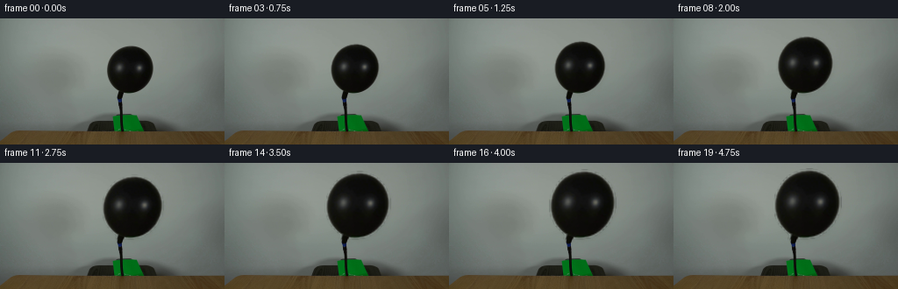
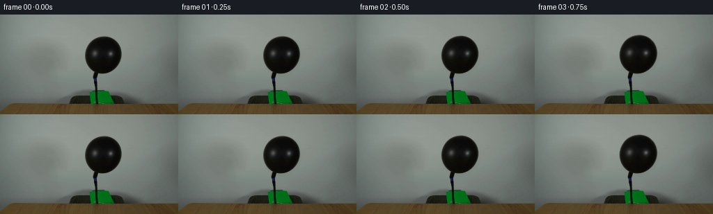

CODING AGENTS AS PIXEL WORLD MODELS
traex/GPT-5.6-Sol · 0038
点击播放 · 原生 RGB 像素
逐轮保存的候选
回放视频、检查图与代码变化。
每份候选均可单独播放。实际图片检查记录在下方工具轨迹中。
候选 01播放与检查图
点击播放 · 原生 RGB 像素


展开代码变化
--- 上一保存版本
+++ 本次保存版本
@@ -0,0 +1,121 @@
+"""Generate a locked-camera sequence of the black balloon steadily inflating.
+
+The animation is made only from the supplied first frame. The existing balloon
+is isolated by its luminance edge, then its photographic texture and soft edge
+are remapped about the fixed hose connection. Everything else stays copied
+pixel-for-pixel from the input photograph.
+"""
+from pathlib import Path
+
+import cv2
+import numpy as np
+from PIL import Image
+
+import artifact_io
+
+
+HERE = Path(__file__).resolve().parent
+H, W = 144, 256
+
+
+def balloon_matte(rgb: np.ndarray) -> np.ndarray:
+ """Return a soft matte for the balloon body in the supplied photograph."""
+ gray = cv2.cvtColor(rgb, cv2.COLOR_RGB2GRAY)
+
+ # The balloon is the sole very dark, large component in this part of the
+ # pale wall. Keep the analysis local so the attached hose/table are not
+ # accidentally transformed with it.
+ candidate = np.zeros((H, W), np.uint8)
+ x0, x1, y0, y1 = 116, 180, 27, 87
+ candidate[y0:y1, x0:x1] = (gray[y0:y1, x0:x1] < 118).astype(np.uint8)
+ candidate = cv2.morphologyEx(candidate, cv2.MORPH_CLOSE,
+ cv2.getStructuringElement(cv2.MORPH_ELLIPSE, (3, 3)))
+
+ count, labels, stats, _ = cv2.connectedComponentsWithStats(candidate, 8)
+ # Largest local component is the balloon. Filling its contour also keeps
+ # the bright specular reflections as part of the rubber surface.
+ label = 1 + int(np.argmax(stats[1:, cv2.CC_STAT_AREA]))
+ body = (labels == label).astype(np.uint8) * 255
+ contours, _ = cv2.findContours(body, cv2.RETR_EXTERNAL, cv2.CHAIN_APPROX_NONE)
+ filled = np.zeros_like(body)
+ cv2.drawContours(filled, contours, -1, 255, cv2.FILLED)
+
+ # A subpixel feather closely reproduces the anti-aliased photographic edge.
+ matte = cv2.GaussianBlur(filled.astype(np.float32) / 255.0, (0, 0), 0.72)
+ matte[matte < 0.008] = 0.0
+ return matte
+
+
+def remap_balloon(rgb: np.ndarray, matte: np.ndarray, scale_x: float,
+ scale_y: float, frame_no: int) -> np.ndarray:
+ """Inflate around the fixed neck at the end of the upward-pointing hose."""
+ # The hose meets the balloon at this pixel. Scaling about it leaves the
+ # attachment fixed while the envelope expands upward and outwards.
+ anchor_x, anchor_y = 138.0, 85.0
+ yy, xx = np.mgrid[0:H, 0:W].astype(np.float32)
+
+ # An extremely small, slow rightward settling accompanies inflation. It is
+ # zero at the neck and remains below one pixel at the crown.
+ settle = 0.42 * ((frame_no / 19.0) ** 1.4)
+ height_fraction = np.clip((anchor_y - yy) / 58.0, 0.0, 1.2)
+ source_x = anchor_x + (xx - anchor_x - settle * height_fraction) / scale_x
+ source_y = anchor_y + (yy - anchor_y) / scale_y
+
+ # Remap premultiplied colour. This prevents a bright fringe at the edge.
+ premul = rgb.astype(np.float32) * matte[..., None]
+ warped_a = cv2.remap(matte, source_x, source_y, cv2.INTER_CUBIC,
+ borderMode=cv2.BORDER_CONSTANT, borderValue=0)
+ warped_p = cv2.remap(premul, source_x, source_y, cv2.INTER_CUBIC,
+ borderMode=cv2.BORDER_CONSTANT, borderValue=0)
+ warped_a = np.clip(warped_a, 0.0, 1.0)
+ balloon = warped_p / np.maximum(warped_a[..., None], 1e-4)
+
+ base = rgb.astype(np.float32)
+
+ # Soft contact/cast shadow on the pale wall gives the enlarged silhouette
+ # the same grounded photographic quality as the source frame.
+ shadow = cv2.GaussianBlur(warped_a, (0, 0), 2.1)
+ shadow = cv2.warpAffine(shadow, np.float32([[1, 0, 1.4], [0, 1, 1.8]]),
+ (W, H), flags=cv2.INTER_LINEAR,
+ borderMode=cv2.BORDER_CONSTANT)
+ exposed_shadow = shadow * (1.0 - warped_a)
+ base *= (1.0 - 0.055 * exposed_shadow[..., None])
+
+ # As latex stretches, broad reflections get very slightly softer/brighter.
+ # The change is deliberately restrained so it remains a black balloon.
+ amount = (scale_x - 1.0) / 0.40
+ if amount > 0:
+ soft = cv2.GaussianBlur(balloon, (0, 0), 0.45 + 0.35 * amount)
+ balloon = balloon * (1.0 - 0.10 * amount) + soft * (0.10 * amount)
+ # Gentle spherical illumination, strongest away from the dark rim.
+ balloon += (0.75 * amount * np.power(warped_a, 2.0))[..., None]
+
+ out = base * (1.0 - warped_a[..., None]) + balloon * warped_a[..., None]
+ return np.clip(np.rint(out), 0, 255).astype(np.uint8)
+
+
+def make_frames() -> np.ndarray:
+ first = np.asarray(Image.open(HERE / "first_frame.png").convert("RGB"),
+ dtype=np.uint8)
+ if first.shape != (H, W, 3):
+ raise ValueError(f"Unexpected first frame shape: {first.shape}")
+
+ matte = balloon_matte(first)
+ frames = np.empty((20, H, W, 3), dtype=np.uint8)
+ frames[0] = first # Generation contract: must be pixel-identical.
+
+ for i in range(1, 20):
+ t = i / 19.0
+ # Constant pump flow means volume, rather than radius, is near-linear.
+ # A smooth startup avoids a conspicuous jump directly after frame zero.
+ flow = t * t * (3.0 - 2.0 * t)
+ scale = (1.0 + ((1.40 ** 3) - 1.0) * flow) ** (1.0 / 3.0)
+ # The rubber envelope becomes just a little taller than wide.
+ sx = scale
+ sy = 1.0 + (scale - 1.0) * 1.055
+ frames[i] = remap_balloon(first, matte, sx, sy, i)
+ return frames
+
+
+if __name__ == "__main__":
+ artifact_io.save(make_frames(), HERE)
可观测工具轨迹
实际执行的命令与返回图片。
命令 1exit 0
/bin/bash -lc "cat GENERATION_RULES.md && printf '\\n---PROMPT---\\n' && cat prompt.txt"
命令 2exit 1
/bin/bash -lc "find . -maxdepth 2 -type f -printf '%p\\n' | sort && printf '\\n---TOOLS---\\n' && command -v ffmpeg && command -v python3"
命令 3exit 0
/bin/bash -lc "python3 - <<'PY'
from PIL import Image
import numpy as np
im=np.array(Image.open('first_frame.png').convert('RGB'))
print(im.shape,im.min(),im.max(),im.mean((0,1)),im.std((0,1)))
# row/column average and selected regions stats
for y0,y1 in [(0,30),(30,60),(60,90),(90,110),(110,144)]:
a=im[y0:y1]; print('rows',y0,y1,'mean',a.mean((0,1)).round(1),'std',a.std((0,1)).round(1))
print('packages')
for x in ['cv2','scipy','skimage']:
try:
m=__import__(x); print(x,'ok',getattr(m,'__version__',''))
except Exception as e: print(x,e)
PY"命令 4exit 0
/bin/bash -lc "python3 - <<'PY'
import cv2, numpy as np
im=cv2.imread('first_frame.png'); g=cv2.cvtColor(im,cv2.COLOR_BGR2GRAY)
for t in [15,25,35,45,55,65,75,85,100]:
m=(g<t).astype('uint8'); n,L,S,C=cv2.connectedComponentsWithStats(m,8)
cc=sorted([tuple(x) for x in S[1:] if x[4]>5],key=lambda z:-z[4])[:15]
print('\\nT',t,'pixels',m.sum(),'components',n-1)
print(' x y w h area:',cc)
# 8x8 block grayscale avg ascii
chars=' .:-=+*#%@'
for y in range(0,144,4):
s=''
for x in range(0,256,4):
v=g[y:y+4,x:x+4].mean(); s+=chars[min(9,int(v/256*10))]
print(s)
PY"命令 5exit 0
/bin/bash -lc "cat artifact_io.py && python3 - <<'PY'
import cv2,numpy as np
im=cv2.imread('first_frame.png')[:,:,::-1]
# examine coarse RGB in scene / segment boundaries per row threshold luminance<55
lum=cv2.cvtColor(im[:,:,::-1],cv2.COLOR_BGR2GRAY)
print('dark bounds row spans (<55), around center')
for y in range(25,133):
xs=np.where(lum[y]<55)[0]
# components near x148
runs=[]
if len(xs):
sp=np.split(xs,np.where(np.diff(xs)>1)[0]+1)
for r in sp:
if len(r)>=2 and r[-1]>=90 and r[0]<=195:runs.append((r[0],r[-1],len(r)))
if runs: print(y,runs)
print('RGB samples')
for p in [(0,0),(120,10),(148,25),(148,30),(148,32),(148,35),(130,45),(148,45),(165,45),(123,60),(130,60),(148,60),(170,60),(148,85),(148,92),(138,100),(138,115),(50,100),(50,120),(200,120)]:
x,y=p; print(p,im[y,x])
PY"命令 6exit 0
/bin/bash -lc "python3 - <<'PY'
import cv2,numpy as np
im=cv2.imread('first_frame.png'); g=cv2.cvtColor(im,cv2.COLOR_BGR2GRAY)
for t in [80,100,115]:
print('\\nTH',t)
for y in range(27,90):
m=(g[y,100:200]<t).astype(np.uint8)
# runs len >= 2
xx=np.where(m)[0]+100
sp=np.split(xx,np.where(np.diff(xx)>1)[0]+1) if len(xx) else []
rs=[(r[0],r[-1]) for r in sp if len(r)>1]
if rs: print(y,rs)
PY"命令 7exit 0
/bin/bash -lc "cat > generate.py <<'PY'
\"\"\"Generate a locked-camera sequence of the black balloon steadily inflating.
The animation is made only from the supplied first frame. The existing balloon
is isolated by its luminance edge, then its photographic texture and soft edge
are remapped about the fixed hose connection. Everything else stays copied
pixel-for-pixel from the input photograph.
\"\"\"
from pathlib import Path
import cv2
import numpy as np
from PIL import Image
import artifact_io
HERE = Path(__file__).resolve().parent
H, W = 144, 256
def balloon_matte(rgb: np.ndarray) -> np.ndarray:
\"\"\"Return a soft matte for the balloon body in the supplied photograph.\"\"\"
gray = cv2.cvtColor(rgb, cv2.COLOR_RGB2GRAY)
# The balloon is the sole very dark, large component in this part of the
# pale wall. Keep the analysis local so the attached hose/table are not
# accidentally transformed with it.
candidate = np.zeros((H, W), np.uint8)
x0, x1, y0, y1 = 116, 180, 27, 87
candidate[y0:y1, x0:x1] = (gray[y0:y1, x0:x1] < 118).astype(np.uint8)
candidate = cv2.morphologyEx(candidate, cv2.MORPH_CLOSE,
cv2.getStructuringElement(cv2.MORPH_ELLIPSE, (3, 3)))
count, labels, stats, _ = cv2.connectedComponentsWithStats(candidate, 8)
# Largest local component is the balloon. Filling its contour also keeps
# the bright specular reflections as part of the rubber surface.
label = 1 + int(np.argmax(stats[1:, cv2.CC_STAT_AREA]))
body = (labels == label).astype(np.uint8) * 255
contours, _ = cv2.findContours(body, cv2.RETR_EXTERNAL, cv2.CHAIN_APPROX_NONE)
filled = np.zeros_like(body)
cv2.drawContours(filled, contours, -1, 255, cv2.FILLED)
# A subpixel feather closely reproduces the anti-aliased photographic edge.
matte = cv2.GaussianBlur(filled.astype(np.float32) / 255.0, (0, 0), 0.72)
matte[matte < 0.008] = 0.0
return matte
def remap_balloon(rgb: np.ndarray, matte: np.ndarray, scale_x: float,
scale_y: float, frame_no: int) -> np.ndarray:
\"\"\"Inflate around the fixed neck at the end of the upward-pointing hose.\"\"\"
# The hose meets the balloon at this pixel. Scaling about it leaves the
# attachment fixed while the envelope expands upward and outwards.
anchor_x, anchor_y = 138.0, 85.0
yy, xx = np.mgrid[0:H, 0:W].astype(np.float32)
# An extremely small, slow rightward settling accompanies inflation. It is
# zero at the neck and remains below one pixel at the crown.
settle = 0.42 * ((frame_no / 19.0) ** 1.4)
height_fraction = np.clip((anchor_y - yy) / 58.0, 0.0, 1.2)
source_x = anchor_x + (xx - anchor_x - settle * height_fraction) / scale_x
source_y = anchor_y + (yy - anchor_y) / scale_y
# Remap premultiplied colour. This prevents a bright fringe at the edge.
premul = rgb.astype(np.float32) * matte[..., None]
warped_a = cv2.remap(matte, source_x, source_y, cv2.INTER_CUBIC,
borderMode=cv2.BORDER_CONSTANT, borderValue=0)
warped_p = cv2.remap(premul, source_x, source_y, cv2.INTER_CUBIC,
borderMode=cv2.BORDER_CONSTANT, borderValue=0)
warped_a = np.clip(warped_a, 0.0, 1.0)
balloon = warped_p / np.maximum(warped_a[..., None], 1e-4)
base = rgb.astype(np.float32)
# Soft contact/cast shadow on the pale wall gives the enlarged silhouette
# the same grounded photographic quality as the source frame.
shadow = cv2.GaussianBlur(warped_a, (0, 0), 2.1)
shadow = cv2.warpAffine(shadow, np.float32([[1, 0, 1.4], [0, 1, 1.8]]),
(W, H), flags=cv2.INTER_LINEAR,
borderMode=cv2.BORDER_CONSTANT)
exposed_shadow = shadow * (1.0 - warped_a)
base *= (1.0 - 0.055 * exposed_shadow[..., None])
# As latex stretches, broad reflections get very slightly softer/brighter.
# The change is deliberately restrained so it remains a black balloon.
amount = (scale_x - 1.0) / 0.40
if amount > 0:
soft = cv2.GaussianBlur(balloon, (0, 0), 0.45 + 0.35 * amount)
balloon = balloon * (1.0 - 0.10 * amount) + soft * (0.10 * amount)
# Gentle spherical illumination, strongest away from the dark rim.
balloon += (0.75 * amount * np.power(warped_a, 2.0))[..., None]
out = base * (1.0 - warped_a[..., None]) + balloon * warped_a[..., None]
return np.clip(np.rint(out), 0, 255).astype(np.uint8)
def make_frames() -> np.ndarray:
first = np.asarray(Image.open(HERE / \"first_frame.png\").convert(\"RGB\"),
dtype=np.uint8)
if first.shape "'!= (H, W, 3):
raise ValueError(f"Unexpected first frame shape: {first.shape}")
matte = balloon_matte(first)
frames = np.empty((20, H, W, 3), dtype=np.uint8)
frames[0] = first # Generation contract: must be pixel-identical.
for i in range(1, 20):
t = i / 19.0
# Constant pump flow means volume, rather than radius, is near-linear.
# A smooth startup avoids a conspicuous jump directly after frame zero.
flow = t * t * (3.0 - 2.0 * t)
scale = (1.0 + ((1.40 ** 3) - 1.0) * flow) ** (1.0 / 3.0)
# The rubber envelope becomes just a little taller than wide.
sx = scale
sy = 1.0 + (scale - 1.0) * 1.055
frames[i] = remap_balloon(first, matte, sx, sy, i)
return frames
if __name__ == "__main__":
artifact_io.save(make_frames(), HERE)
PY
python3 generate.py
python3 - <<'"'PY'
from PIL import Image
import numpy as np, os
z=np.load('pixels.npz')['pixels']
frames=np.stack([np.array(Image.open(f'frames/{i:02d}.png')) for i in range(20)])
orig=np.array(Image.open('first_frame.png').convert('RGB'))
print('shape/dtype',frames.shape,frames.dtype)
print('frame0 exact',np.array_equal(frames[0],orig),'maxdiff',np.abs(frames[0].astype(int)-orig).max())
for i in [0,1,2,3,5,8,11,14,17,19]:
d=np.any(frames[i]"'!=orig,axis=2)
ys,xs=np.where(d)
print(i,'"'changed',d.sum(),'bbox',None if not d.any() else (xs.min(),ys.min(),xs.max(),ys.max()),'mean',frames[i].mean())
print('outputs',[(x,os.path.getsize(x)) for x in ['pixels.npz','inspection.png','transition_check.png','index.html']])
PY"保存候选 1 份；完成命令 7 次；可验证图片返回 0 张。原始 API 响应与完整日志保留在本地。